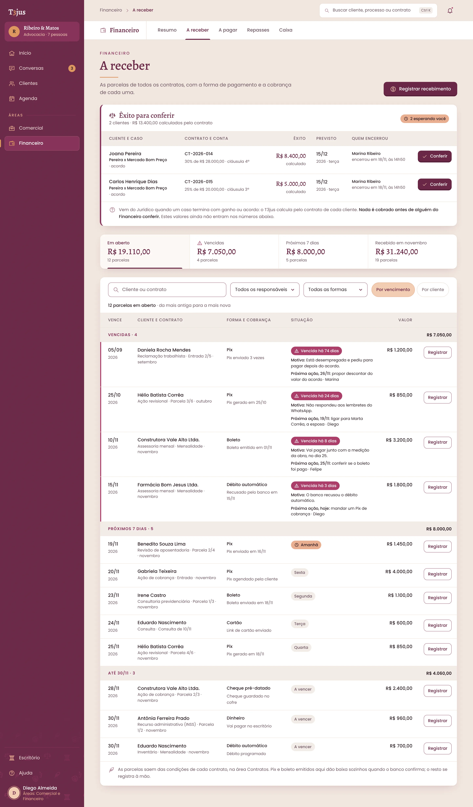

A receber com “Êxito para conferir”
Bloco novo no alto do A receber, que só aparece quando há algo para conferir. Uma linha por cliente: cliente e caso, contrato e a conta (30% de R$ 28.000,00), o valor calculado, a data prevista, quem encerrou o caso e quando, e o botão “Conferir”. O êxito para conferir não entra nos quatro números do alto: ainda não é parcela. O bloco tem o próprio total, só de êxito.